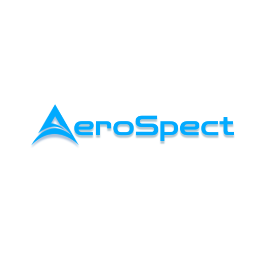

AeroSpect Inc.
Aerial Reality Capture, GIS Mapping & Site Intelligence for Mission Critical Construction
Capability statement prepared for HITT Contracting
Company Snapshot
AeroSpect Inc. provides professional drone-based aerial data capture, photogrammetry, GIS mapping, thermal imaging, and construction progress documentation.
The company is led by a former commercial general contractor and former government contractor for security installations on military bases, with more than 3,000 licensed drone flight hours across construction, energy, agriculture, and infrastructure environments.
AeroSpect understands jobsite sequencing, access control, site logistics, owner documentation, and repeatable field intelligence for project managers, VDC teams, owner representatives, and trade partners.
Best-Fit Project Types
- Mission critical and data center construction
- Industrial and energy sites
- Large-site civil and infrastructure work
- Security, perimeter, and access-control documentation
- Construction technology and VDC support
- Recurring regional site documentation
Core Services
- Recurring aerial construction progress documentation
- High-resolution existing-condition photo records
- Orthomosaic mapping and photogrammetry deliverables
- GIS-ready site layers, annotations, and map packages
- Site logistics, laydown, access road, drainage, and utility corridor documentation
- Thermal imaging support for roofs, electrical infrastructure, equipment, and site heat concerns
- Perimeter and security infrastructure documentation
- Stakeholder-ready reporting for PMs, owner reps, consultants, and field teams
Data Center Applications
- Pre-construction site baseline documentation
- Weekly or monthly progress flights for large campus-style builds
- Earthwork, grading, trenching, and utility corridor documentation
- Visual status records for subcontractor coordination and owner reporting
- GIS-based tracking of site access, circulation, perimeter controls, and phased work areas
- Thermal and multispectral support where specialty sensing adds value
- Rapid independent documentation after weather, site events, disputes, or schedule impacts
Differentiators
Former commercial GC perspective
Military-base security installation background
3,000+ licensed drone flight hours
GIS analyst capability
Thermal and multispectral specialization
Established Northern California operator